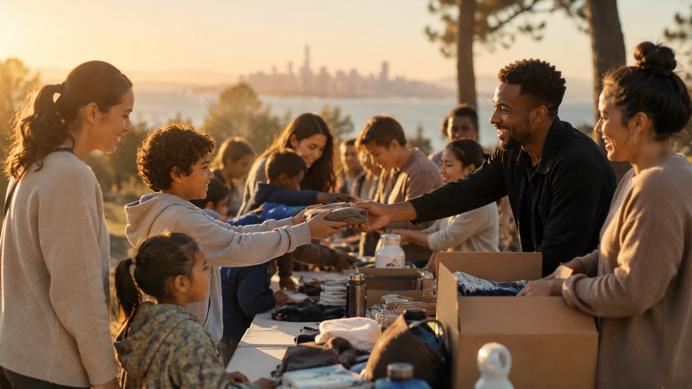

Planting
The Bay
Overview
A Bay Area church-planting and campus-ministry initiative beginning in Berkeley, then expanding to San Francisco, the Peninsula, San Jose, the Tri-Valley, and beyond.
Berkeley First → Bay Area Movement // Year 1 Goal $1M
Our Story
Berkeley First.
Stuart and Ashley Mains are leading a church-planting and campus-ministry initiative across the San Francisco Bay Area in partnership with the SF Bay Fellowship.
The first plant begins in Berkeley, building both campus ministry and a local church with a clear path to multiply across the region.

The vision is simple to understand and easy to join: tell the story, fund the work, and invite people to give, serve, pray, relocate, or join staff.